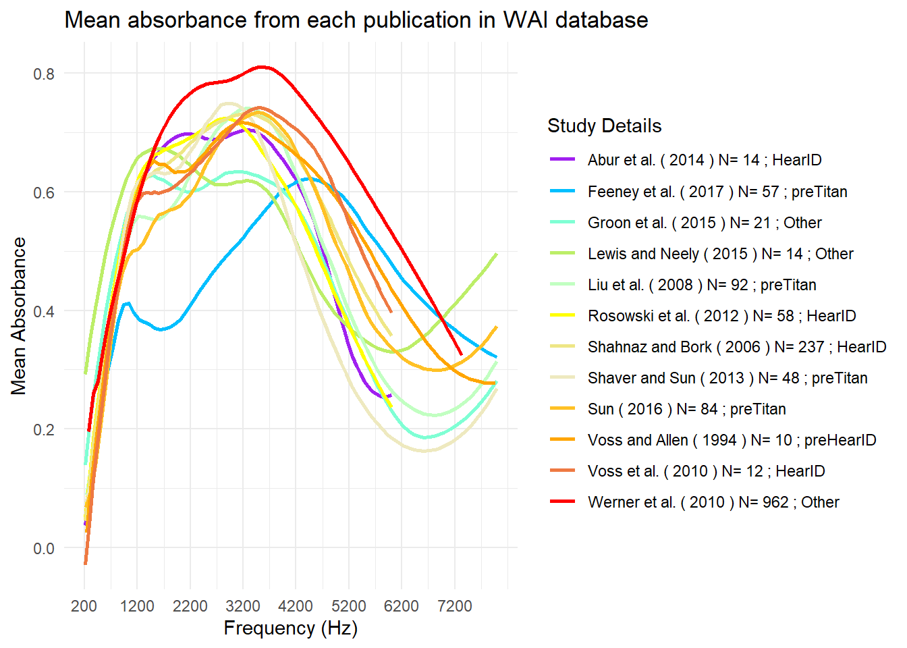
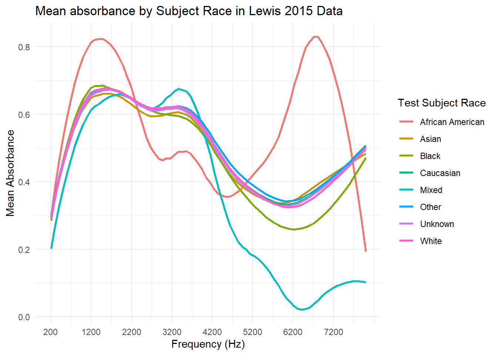

library(DBI)
library(RMariaDB)
library(tidyverse)
con_wai <- dbConnect(
MariaDB(), host = "scidb.smith.edu",
user = "waiuser", password = "smith_waiDB",
dbname = "wai"
)
Measurements <- tbl(con_wai, "Measurements")
PI_Info <- tbl(con_wai, "PI_Info")
Subjects <- tbl(con_wai, "Subjects")SQL Data Analysis
Voss (2020) Figure and SQL WAI Data
This project utilizes the Wideband Acoustic Immittance (WAI) Database hosted by Smith College to explore data analysis using SQL and R. Specifically, I reproduced Figure 1 from the Voss (2020) publication and created a visualization comparing mean absorbance of sound among subjects of different races from one study in the database. The dataset was explored and manipulated in SQL, while R was used for visualization.
Figure 1 Voss (2020)

PART 1: Recreating Voss (2020) Figure 1
In this part of my work, I recreated the Voss (2020) Figure 1 as closely as possible by utilizing ggplot2. I began by selecting my relevant variables, and joining via primary keys. I then isolated the data for the studies included in the plot, the desired frequencies, and grouped by the relevant variables. NOTE: Some deviation from the original figure results from updates in the dataset since the figure publication in 2020–4 years of additional data is included.
SELECT
p.Identifier,
p.AuthorsShortList,
p.Year,
m.Instrument,
COUNT(DISTINCT CONCAT(m.SubjectNumber, m.Ear)) AS Unique_Ears,
m.Frequency,
AVG(m.Absorbance) AS Mean_Absorbance
FROM Measurements AS m
JOIN PI_Info AS p
ON m.Identifier = p.Identifier
JOIN Subjects AS s ON m.SubjectNumber = s.SubjectNumber
WHERE p.Identifier IN ('Abur_2014', 'Feeney_2017', 'Groon_2015',
'Lewis_2015', 'Liu_2008', 'Rosowski_2012', 'Shahnaz_2006',
'Shaver_2013', 'Sun_2016', 'Voss_1994', 'Voss_2010',
'Werner_2010')
AND m.Frequency BETWEEN 200 AND 8000
GROUP BY
p.Identifier,
p.AuthorsShortList,
p.Year, m.Instrument,
m.Frequency
HAVING
Unique_Ears > 0
ORDER BY
p.Identifier, m.Frequency;freq_data |>
mutate(Label = paste(AuthorsShortList, "(", Year, ") N=", Unique_Ears, ";", Instrument)) |>
group_by(Label) |>
arrange(desc(Label)) |>
ggplot(aes(x = Frequency, y = Mean_Absorbance, color = Label )) +
geom_smooth(se = FALSE, method = "loess", span = 0.3) +
scale_x_continuous(limits = c(200,8000), breaks = seq(200, 8000, by = 1000)) +
labs(
title = "Mean absorbance from each publication in WAI database",
x = "Frequency (Hz)",
y = "Mean Absorbance",
color = "Study Details"
) +
theme_minimal() +
scale_color_manual(values = c(
"purple", "deepskyblue", "aquamarine", "darkolivegreen2", "darkseagreen1", "yellow",
"khaki2", "lemonchiffon2", "goldenrod1", "orange", "sienna2", "red", "tomato4"))
PART 2: Mean Absorbance of Lewis 2015 Study by Subject Race
In this part, I chose to visualize the data of the Lewis 2015 study whose data was collected within the WAI Database. In this, I grouped the data by subject race in visualization, maintaining the previous frequency threshold. I started by creating a SQL subquery for the data I desired, and visualized the mean absorbency to frequency of subjects amongst different racial groups
SELECT
s.Race,
p.Identifier,
COUNT(DISTINCT CONCAT(m.SubjectNumber, m.Ear)) AS Unique_Ears,
m.Frequency,
AVG(m.Absorbance) AS Mean_Absorbance
FROM Measurements AS m
JOIN PI_Info AS p
ON m.Identifier = p.Identifier
JOIN Subjects AS s ON m.SubjectNumber = s.SubjectNumber
WHERE
p.Identifier = ('Lewis_2015')
AND m.Frequency BETWEEN 200 AND 8000
GROUP BY s.Race, p.Identifier, m.Frequency
HAVING
Unique_Ears > 0;race_data <- race_data |>
mutate(Race = str_trim(Race),
Race = str_to_title(Race))
race_data |>
group_by(Race) |>
ggplot(aes(x = Frequency, y = Mean_Absorbance, color = Race)) +
geom_smooth(se = FALSE, method = "loess", span = 0.3) +
scale_x_continuous(limits = c(200, 8000), breaks = seq(200, 8000, by = 1000)) +
labs(
title = "Mean absorbance by Subject Race in Lewis 2015 Data",
x = "Frequency (Hz)",
y = "Mean Absorbance",
color = "Test Subject Race",
caption = "Recreating Voss (2020) Figure"
) +
theme_minimal()
To conclude, I created subqueries of the WAI Database to best manipulate the data into visualizations using ggplot2. Although the data originated in SQL form, SQL was used to create subqueries that translate into a dataframe output in R. This was then used to create graphs via ggplot2 and tidyverse functions. In the end, a graph mimicking the output of Voss (2020) Figure 1 (with slight, noted deviations) and a graph to visualize another aspect of a specific study, Lewis 2015, differences in mean absorbency at different frequencies among subject race.
Citation:
Voss, Susan E., et al. “Wideband Acoustic Immittance Dataset.” Api.Openalex.Org, Smith College, api.openalex.org/works/doi:10.3837/tiis.2022.12.001. Accessed 28 Nov. 2024.
doi.org/10.35482/egr.001.2022
Voss, Susan E. “An Online Wideband Acoustic Immittance (WAI) Database and Corresponding Website.” Ear and Hearing, U.S. National Library of Medicine, 1 Nov. 2020, pmc.ncbi.nlm.nih.gov/articles/PMC7093226/.